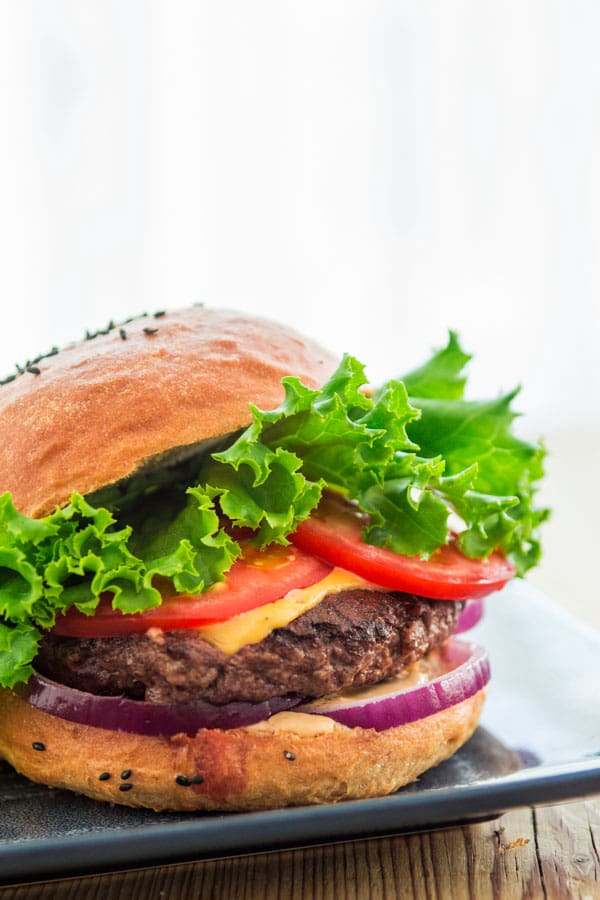

Home
Burger

Description
This classic homemade burger features a juicy, perfectly seared chicken or veggie
patty seasoned with garlic, salt, and black pepper. Melted cheddar cheese
cascades down the sides, nestled inside a soft, lightly toasted brioche bun. Crisp
lettuce, fresh vine-ripened tomatoes, and tangy pickles provide a refreshing
crunch that cuts through the rich flavors.
The secret to this ultimate comfort food lies in the signature burger sauce, which
blends creamy mayonnaise, tangy ketchup, and a hint of sweet relish. Whether
you are hosting a summer backyard barbecue or looking for a quick weeknight
dinner, this foolproof recipe delivers restaurant-quality results in less than twenty minutes.
Ingredients
- 4 pre-made chicken or veggie patties
- 4 brioche burger buns
- 4 slices cheddar cheese
- 1 tbsp vegetable oil
- 1 pinch salt
- 1 pinch black pepper
- 1 cup shredded iceberg lettuce
- 1 large vine-ripened tomato
- 8 dill pickle slices
- 1 small red onion
- 3 tbsp mayonnaise
- 2 tbsp ketchup
- 1 tbsp sweet pickle relish
- 1 tsp yellow mustard
Cooking Instructions
-
Mix the Sauce: Whisk the mayonnaise, ketchup, sweet relish, and yellow mustard in a small bowl until smooth. Cover the bowl and place it in the refrigerator until you are ready to assemble.
-
Prep the Toppings: Wash and shred the iceberg lettuce. Slice the tomato and red onion into thin rounds. Set the toppings aside on a plate for quick assembly.
-
Toast the Buns: Heat a large skillet over medium-high heat with no oil. Place the brioche bun halves split-side down on the hot pan. Toast for 1 to 2 minutes until light golden brown, then remove.
-
Cook the Patties: Add the vegetable oil to the same skillet over medium-high heat. Season both sides of your chicken or veggie patties with salt and pepper. Cook the patties for 4 to 5 minutes on each side until fully heated through.
-
Melt the Cheese: Turn off the stove heat source completely. Place one slice of cheddar cheese on top of each patty. Cover the skillet with a lid for 1 minute to let the trapped steam melt the cheese.
-
Assemble the Burgers: Spread a generous spoonful of the signature sauce onto the bottom bun halves. Layer the shredded lettuce, tomato slices, and red onion rings next. Place the cheesy patty on top of the vegetables. Add the pickle slices and cover with the top bun.